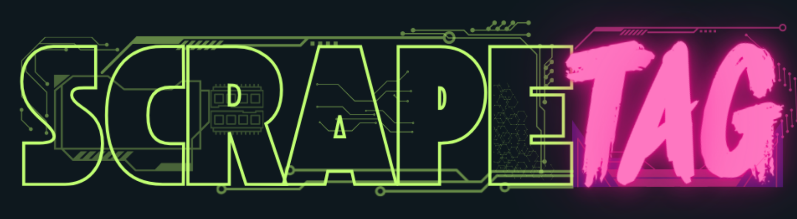
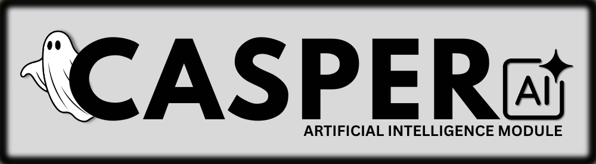
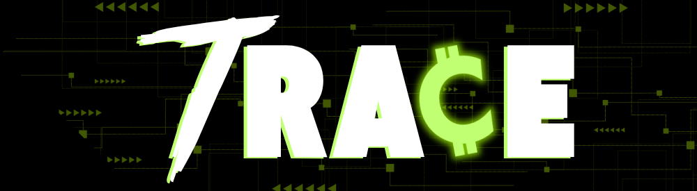

● Available now
GhostOps Terminal
Command context and structured signal for delivery decisions.
BuildGhost creates AI-driven quality-assurance and developer-experience systems for high-stakes software delivery—where the cost of an unclear signal is more than a slow sprint.
An AI-driven command center and modular toolbelt for shaping the operational reality around software delivery. Not another dashboard—a place to interrogate the signal.
› ghostops inspect --release candidate-04
connecting / delivery context
✓ change surface mapped _
✓ test signal reconciled
! 2 review paths need attention
› signal explain --focus risk
RELAY / summarising operational context
“The release is coherent. Two transitions merit a closer look before handoff.”
› _
Each system begins with a brief.
Details open in place.
Command context and structured signal for delivery decisions.
Frames the changing conditions around a release decision.
Extracts, structures, and validates metadata tags from web content dynamically.
Hostile-environment runner for pressure-testing software under simulated pressure and resource faults.
Context-aware quality orchestration layer that interprets ScrapeTag discoveries as test strategies.
Interactive visualization of the entire BuildGhost ecosystem and automated release pipeline.
ScrapeTag inspects the target web page, mapping HTML locator paths and establishing validated smart tags.
CASPER interprets the page discoveries to scaffold Playwright test scripts, establishing happy paths automatically.
Trace executes an A/B bucket coin-flip experiment on the payment funnel to verify user routing logic.
CASPER digests Trace results and automatically appends specific edge cases back into the Playwright suite.
GhostWriter sets up dependencies, constructs test suites, and runs them inside isolated Docker containers.
Release Readiness checks coverage gates. The score jumps from 88 to 96 after unit tests are added.
GhostWriter cuts a release branch, pushes code changes, and merges the pull request with your sign-off.
SignalDeck initiates Datadog-style SDLC monitoring, bumps version states, and connects PagerDuty loops.
The exact order of execution — loops included. Every handoff is deliberate.

Scrapes the target site, maps the full DOM selector tree, and generates validated smart tags.

Processes the ScrapeTag metadata map and outputs a structured test strategy.

Receives the CASPER strategy and scaffolds initial Playwright tests covering all happy-path flows.

Executes a coin-flip A/B bucket experiment on the payment funnel. Logs every pass and failure.
Loops back to digest Trace outputs and refines the test strategy with targeted edge-case coverage.
↩ Loop backAppends the CASPER-directed funnel edge cases to the test suite and prompts the user for sign-off.
↩ Loop backPackages the approved test suite and hands it off to GhostWriter for dependency setup and CI/CD ingestion.
→ HandoffInstalls dependencies, scaffolds the boilerplate harness, injects the tests, and spins up a Docker/K8s CI/CD container.
Analyzes the test run, weighs signals, and scores the release candidate. Initial score: 88 / 100. Details the exact corrective actions needed.
CASPER generates and runs the recommended unit tests, reporting status back to the gatekeeper loop.
Re-evaluates the candidate with unit tests included. Score climbs to 96 / 100. Gates pass.
↩ Loop back ✓ PassCuts the release branch, pushes the codebase, and merges the pull request — with explicit user approval.
↩ Loop back
Takes over the operations phase. Provides Datadog/ELK-style monitoring, historical drill-down, and a PagerDuty-style alerting loop.
→ Ops handoffFuture extension point — engineers submit custom modules (free or paid), establishing BuildGhost as the definitive all-in-one SDLC platform.
◆ On the horizonGhostOps Terminal is the current focus: a command layer for interrogating delivery context.
Focused modules will extend the signal across readiness, quality, incident response, and workflow.
A growing ecosystem designed to make software delivery feel less fragmented and more deliberate.